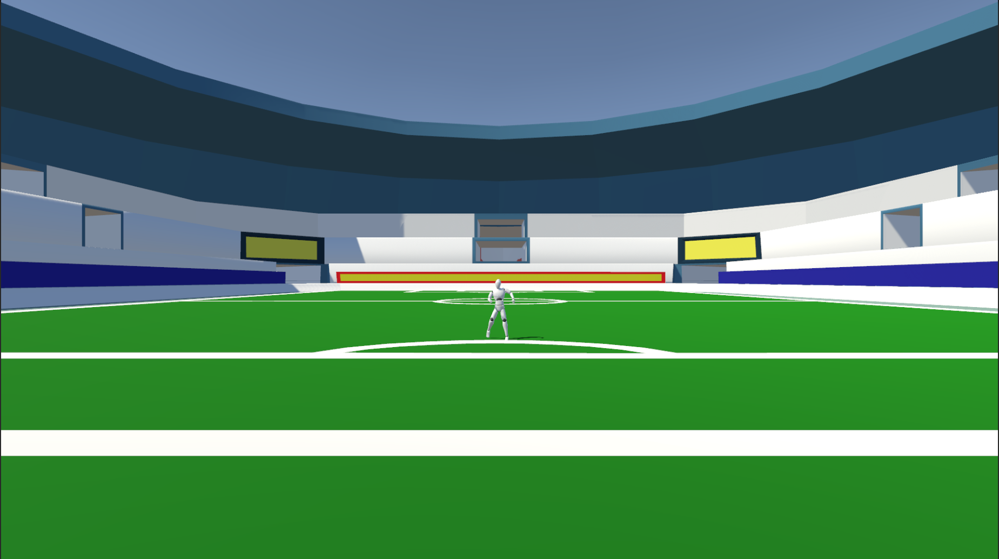

introduction
This Project was made for researching people's choices/reflexes in VR and Real life to see the differemce if any. 3 version of the project were made.
- VR research version (main branch)
- Video research version (videoversion branch)
- Game version (gameversion branch)
Prerequisites
Unity version 2022.3.29
Proccess of the experiment
The reaserch version are design for a researcher to setup the options and a goalkeeper that will be taking on the experiment, game version is supposed to be a single person experience.
- Upon entering the project, the first step is to input all of the details needed and options.
- Next there is an option to play a preview of the options the user has selected to see if they want to keep them or change them. (Data in this preview are not saved)
- When pressing start an animation/video will play. Just before the shooter touches the ball, the screen to predict is prompted.

 After all of the attempts, the user can either restart or quit.
After all of the attempts, the user can either restart or quit.How it works
The 2 research version are made to save data within .csv files for later experimentning and reviewing.
On the other hand, the game version saves the current data to a .json file for it to later be uploaded on the server.
Animations and videos are not imported yet by the time that this documentation is made.
Game Version and VR research version are meant to be played with VR devices.
About the in-game options/save data:
- ID/Name: The name/ID of the user.
- Gender: The gender of the user.
- Age: The age of the user. (These 3 inputs are only available in the research versions, game version will collect that data automatically)
- Number of Iterations: How many attempts to make
- Number of Sets: How many sets, of set attempts to make Example: Number of Iterations = 2 Number of Sets = 3, 2x3 = 6 total attempts. Betweeen each set there is a "break" for the user, a continue button is then promted. Tutorial settings act as the same, just for the preview.
- Reaction Time Limit: How much time to give to the user to answer. This can be used to test reflexes and fast decision making.
- Show Answers: After each guess, show the correct answer.
Saving Format

(CSV only in research versions)

(JSON format)
How animations and positions are setup

Number of Shoots: How many positions the researcher is going to input. Position Names: (Valid positions are the 9 listed) Animation/Video Clips: The corresponding amount of animations/videos used.

Pairing each animation/video with their position and randomising the array of pairs.
Example: Element 0 of the array (before random) is Punch1 - Top left.
Meaning when that certain animation is played the correct answer will be Top Left This will be setup by the experimenters.
Of course animations will be imported with correct names, ideal quality and predetermined position results that will be imported from the developers.
Just by adding the animations and their corresponding positions, the scripts will take care of them.
Example: if the number of Sets x Iterations is greater than the amouunt of animations imported,
the array will just repeat (as requested). This ensures that if this is not the case, each animation will be only played once.